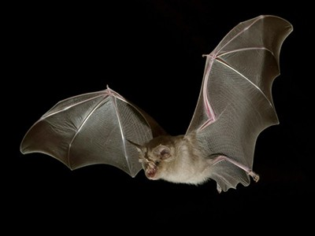
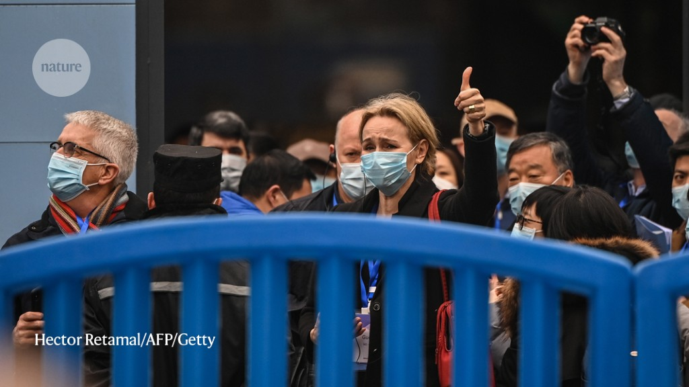
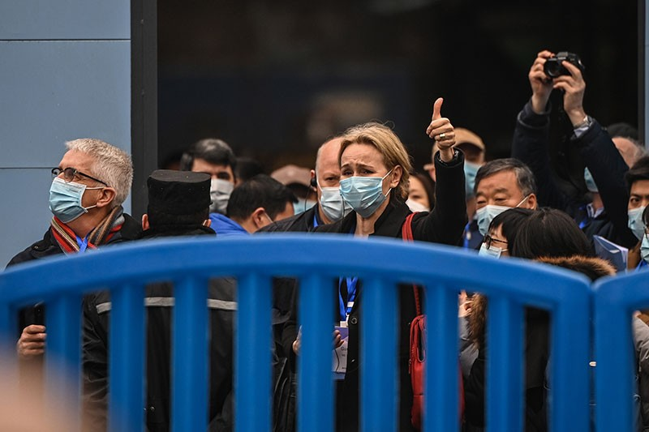
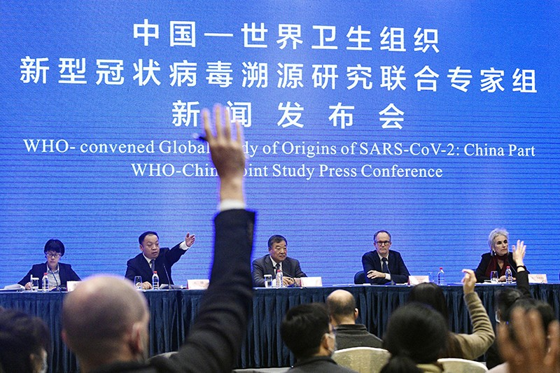
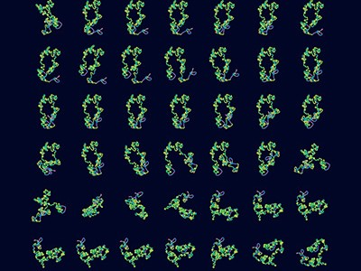

‘Major stones unturned’: COVID origin search must continue after WHO report, say scientists

Scientists say that the hunt for the origins of the COVID-19 pandemic must continue, after a World Health Organization (WHO) team’s visit to China produced no answers to key questions about how the coronavirus started infecting people.
At a press briefing on 9 February in Wuhan, China, members of the WHO team reported conclusions from their month-long investigation into the origin of the coronavirus, which was first reported as cases of ‘viral pneumonia’ in Wuhan in December 2019.The researchers largely discounted the controversial theory that the virus accidentally leaked from a laboratory, and suggested that SARS-CoV-2 probably first passed to people from an animal — already a leading hypothesis among researchers.But the team also offered two hypotheses promoted by the Chinese government and media: that the virus, or its most recent ancestor, might have come from an animal outside China, and that once it was circulating in people, it could have spread on frozen wildlife and other cold packaged goods.
Researchers have given a mixed assessment of the findings.'There are still major stones that need to be unturned, because any investigation into virus origins won’t be accomplished in two weeks,' says Angela Rasmussen, a virologist at Georgetown University who is based in Seattle, Washington.'But what’s important is that this lays the groundwork for a longer investigation in collaboration with the Chinese government.'
Some researchers say that the group, which included 17 researchers from China and 17 international scientists, asked relevant questions and accessed large amounts of data.'It seems the WHO team and their Chinese collaborators are taking a measured approach, weighing the available data appropriately and talking to the right people,' says David Robertson, a virologist at the University of Glasgow, UK.He hopes finer details will be published in the investigation report, which is expected soon.
But other scientists say that it’s not clear what evidence led the team to some of its conclusions.The findings don’t change the existing, widely held view that the virus originated in animals, Nikolai Petrovsky, an immunologist at Flinders University in Adelaide, told the Australian Science Media Centre.And the assessment goes further than expected because it emphasizes the two hypotheses promoted by the Chinese government.He says there is limited evidence — 'beyond relatively weak data already in the public domain' — for the idea that early transmission in China was linked to the ‘cold food chain’, the transportation of frozen goods such as meat.However, he acknowledges that the team might have access to information that is not currently public.
Dominic Dwyer, a medical virologist at New South Wales Health Pathology in Sydney, Australia, and a member of the WHO team, says there is some evidence that the coronavirus could have spread on contaminated fish and meat at Chinese markets, and more details will be included in the written report.
Another focus of the WHO’s investigation was the idea that the virus leaked from a lab — a scenario that the team found unlikely.Peter Ben Embarek, a food-safety and zoonosis scientist with the WHO in Geneva, Switzerland, who headed the investigation, said at the press conference that the team had conducted extensive discussions with staff at the Wuhan Institute of Virology, which has been at the centre of the speculation, and similar labs nearby.He said a leak is unlikely because the virus was not known to scientists before December 2019.
Dwyer says that the team didn’t see anything during its visits to suggest a lab accident.'Now, whether we were shown everything?You can never know.The group wasn’t designed to go and do a forensic examination of lab practice.'
The investigation provides context and insight into what was happening in Wuhan, says Jason Kindrachuck, a microbiologist at the University of Manitoba in Winnipeg, Canada.But the divide between the theories of a lab leak and natural origins has grown deeper as the pandemic has progressed and become politicized, he says.'This isn’t going to put a nail in the coffin for the debate.'
Much of the investigation centred on the early days of the outbreak in Wuhan and tried to pin down the timing of the city’s first infections.The team reviewed health records in the city and surrounding Hubei province from the second half of 2019, looking for unusual fluctuations in influenza-like illnesses and severe respiratory infections, pharmacy purchases for cold and cough medications, and deaths specifically related to pneumonia.It also retrospectively tested some 4,500 patient samples for SARS-CoV-2 viral RNA, and analysed blood samples for antibodies against the virus.The researchers found no evidence that the virus was circulating in the city before December 2019.
But the lack of clear signals of transmission does not mean that the virus wasn’t already established in the community, says Dwyer.The team’s analysis was based on limited data and a surveillance system not designed to catch a virus that could spread silently.To assess properly whether the virus arrived earlier, researchers would have to track what was happening in the wider community, not just in health facilities, he says.
And although the investigation team threw its weight behind the animal-origin theory, it didn’t identify the kinds of animal that could have passed the virus to people.Ben Embarek said that Chinese researchers had tested many domestic, farmed and wild animals in the country but found no evidence that the virus was present or continued to circulate in these species.
Petrovsky says that the animal-transmission findings could hold an important lesson: 'If this pandemic was due to a natural transmission event, then we can expect multiple further transmissions of similar, related coronaviruses from the same animal host to humans over coming years.'
The WHO team said that investigations in Wuhan and nearby areas should continue, in particular to track down the earliest cases, which could help researchers to understand how the pandemic started.It recommended analysing older samples from blood banks in the province and other areas of interest, including using antibody tests that could turn up traces of infection.
The researchers also said that more studies are needed to improve understanding of the possible role of frozen wildlife in viral transmission, and of whether people can be infected through this route.More extensive testing of animals that could act as viral reservoirs is also needed, the group said.
'I’d like to hear more about plans for more work,' says Rasmussen.There are supposedly virus samples stored in labs that haven’t been sequenced, she says, but sequencing them requires planning and money.
The WHO team also recommended broadening the search for the virus’s origin beyond China.Scientists say this is justified, especially given fresh reports of coronaviruses closely related to SARS-CoV-2 being found in bats in Japan, Cambodia and Thailand.
In a study
1 published in
Nature Communications on 9 February, scientists report finding a new coronavirus, which they’ve named RacCS203, in acuminate horseshoe bats (
Rhinolophus acuminatus ) captured in a cave in Thailand in June 2020.The virus shares 91.5% of its genome with SARS-CoV-2.Although more closely related viruses have been found, the result shows that relatives of the pandemic virus are currently circulating in southeast Asia.'Without any doubt, if I had only one chance to survey now, I would survey in southeast Asia rather than inside China,' says Linfa Wang, a virologist at Duke–National University of Singapore Medical School, who led the work.
Researchers have identified several other coronaviruses closely related to SARS-CoV-2 in frozen bat samples stored in Cambodia and Japan.Others have extensively sampled bats in China over the past 15 years.The closest known relative to SARS-CoV-2, named RaTG13, was found in China, in intermediate horseshoe bats (
Rhinolophus affinis ).The two viruses share 96% of their genomes.'If we put the same effort and money and the same talent into southeast Asia, we may get more closely related viruses,' says Wang.
Posted On: 2021-02-10T00:00:00




Content Date: 2021-02-10
Download Date: 2021-03-17
Document ID: L0C049C4A